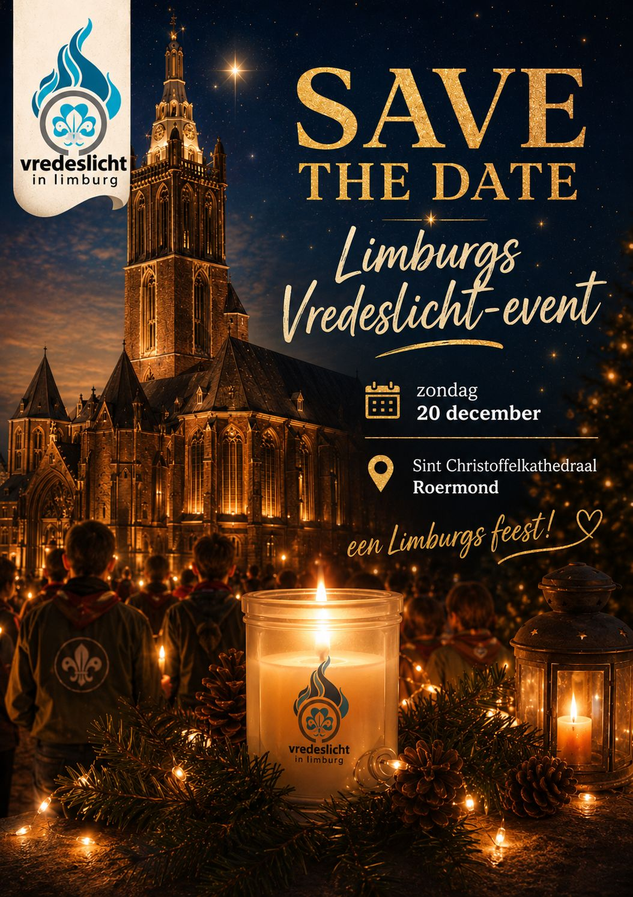

Save the date: Limburgs Vredeslicht-event

Noteer de datum alvast in je agenda: op zondag 20 december vindt het Limburgs Vredeslicht-event plaats bij de Sint Christoffelkathedraal in Roermond.
Een Limburgs feest waar we samen het Vredeslicht doorgeven. Meer details over het programma volgen binnenkort op deze pagina.